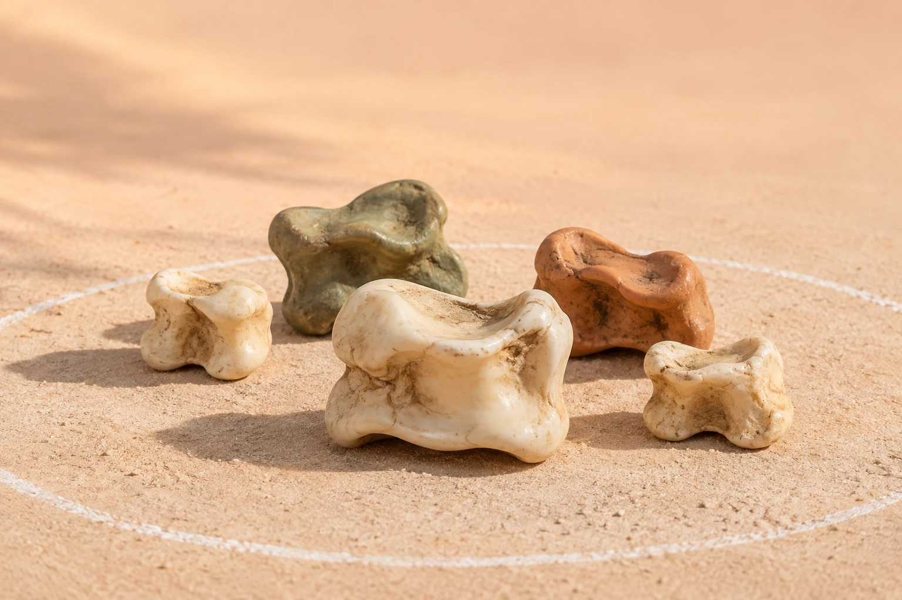

Алаңды дайында
Тегіс жерге шеңбер сызып, ортасына асықтарды тізеді. Ату сызығын — көмбені белгілейді.
ҚАЗАҚТЫҢ ҰЛТТЫҚ ОЙЫНЫ
Дәлдік пен ептілікті шыңдайтын, достарды біріктіретін ұлттық ойын. Кішкентай асықтың үлкен әлемімен таныс.

АСЫҒЫҢ АЛШЫСЫНАН ТҮССІНКөркем иллюстрация01 / ДӘСТҮР МЕН ТАРИХ
Асық ойыны қазақ халқының тұрмысымен, мал шаруашылығымен және бала тәрбиесімен біте қайнасқан.
Балалар асықтарын жинап, сақасын таңдап, аулада бірге ойнаған. Ойын барысында көзбен мөлшерлеуді, кезек күтуді, ортақ ережені сақтауды үйренген. Осы дәстүр отбасында және үлкендердің үйретуі арқылы ұрпақтан ұрпаққа жетті.
Қазақтың дәстүрлі асық ойындары ЮНЕСКО-ның адамзаттың материалдық емес мәдени мұрасының репрезентативтік тізіміне енгізілді.
ЮНЕСКО дерегіАсығың алшысынан түссін!
02 / ОЙЫННЫҢ БАСТЫ ҚҰРАЛЫ
Табиғаттан алынған шағын сүйек
ұлттық ойынның өзегіне айналды.
Асық — қой, ешкі сияқты жануарлардың артқы аяғындағы асық жілік пен жіліншік түйісетін тұстағы шағын буын сүйегі. Оның пішіні әр қырынан әртүрлі көрінеді.
Ойынға көбіне қойдың асығын пайдаланады. Атуға таңдалатын ірі әрі салмақты асық сақа деп аталады. Ал ортаға тізілетін ойын асықтарын кеней дейді.
АСЫҚ ҚАЛАЙ АЛЫНАДЫ?
Тағамға пайдаланылған малдың сирағынан асықты буын тұсынан ажыратып алады.
Ет пен сіңір қалдықтарын кетіріп, жуып, толық кептіреді. Таза әрі бүтін асық ойынға жарайды.
Асықтарды сұрыптап, ірісін сақаға таңдайды. Қажет болса, ажыратуға ыңғайлы түске бояйды.
Балалар асықты ересектердің көмегімен дайындағаны дұрыс.
03 / ТАНЫП ҮЙРЕН
Карточканы таңда.
Асықтың қалай түсетінін ажырат.
Асық қырынан тұрып, ойықтау қыры жоғары қараған қалып. Алшы ойынында бұл қалыпқа ерекше мән беріледі: ойын кезегін анықтауға қатысады.
Бейнелер жоба презентациясынан алынған көрнекі иллюстрациялар. Қалыпты ажыратқанда асықтың жоғары қараған жағына назар аудар.
04 / ОЙЫНҒА ҚОШ КЕЛДІҢ
Асық атуда ойыншы сақасымен ортаға тізілген асықтарды көздеп атады. Мақсат — келісілген ереже бойынша асықты белгіленген шеңберден шығару.
Ойын материалдарыТегіс жерге шеңбер сызып, ортасына асықтарды тізеді. Ату сызығын — көмбені белгілейді.
Ойыншылар кезек тәртібін келіседі. Дәстүрлі нұсқаларда кезек сақаны иіру арқылы да анықталады.
Белгіленген сызықтан сақаны лақтырып, тізілген асықты көздейді. Ату сәтінде өзгелер алаңның шетінде тұрады.
Шеңберден шыққан асық есепке алынады. Ойын соңында келісілген шарт бойынша ең көп асық шығарған ойыншы жеңеді.
Бұл — танысуға арналған жалпы тәртіп. Алаң өлшемі, ату қашықтығы және ұпай санау ойын түріне, жасқа және жарыс ережесіне қарай өзгереді.
05 / ОЙЫННАН ҮЙРЕНЕРІМІЗ
Көзбен мөлшерлеу мен қол қимылын үйлестіруге жаттығасың.
Сақаны ұстау, күшті реттеу және дәл ату машығын үйренесің.
Кезек күтуді, әділ жарысуды және қарсыласыңды құрметтеуді үйренесің.
Ұлттық ойын атауларын танып, үлкендерден жеткен мұраны сақтайсың.
06 / КӨР. ҮЙРЕН. ЗЕРТТЕ.
Мектептегі зерттеуден жиналған
фотосуреттер, видео және сауалнама.
07 / ОҚУШЫЛАРДЫҢ ПІКІРІ
Жоба материалдарында 3–7 сынып оқушыларының сауалнамасы берілген. Презентацияда 50 респондент көрсетілген.
Макет пен сайт арқылы үйренуді қолайлы деп бағалаған.
Word құжатындағы қорытынды бойынша төрт қалыпты дұрыс ажырата алмайды.
Үйірме немесе онлайн платформа ашылса, қатысуға ниетті.
Дереккөз: берілген Word құжаты мен жоба презентациясы. Қалыптарды тану көрсеткіші құжат мәтінінде 24% / 76%, диаграммада 24,5% / 75,5% түрінде берілген. Мұнда мәтіндегі дөңгелектелген мәндер қолданылды.